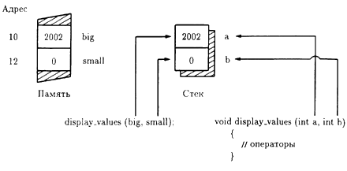
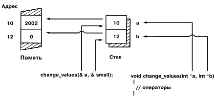

Из урока 9 вы узнали, как разделить ваши программы на небольшие легко управляемые части, называемые функциями. Как вы уже знаете, программы могут передавать информацию (параметры) функциям. Представленные в уроке 9 программы использовали или выводили значения параметров, но не меняли их. Из этого урока вы узнаете, как изменить значение параметра в функции. Вы обнаружите, что для изменения параметров в функции фактически требуется больше шагов, чем можно предположить. Однако этот урок обучит вас всем шагам, которые необходимо знать. К концу данного урока вы освоите следующие основные концепции:
• Если функция не использует указатели или ссылки, она не может изменить значение параметра.
• Для изменения значения параметра функция должна знать адрес параметра в памяти.
• Оператор адреса C++ (&) позволяет вашей программе определить адрес переменной в памяти.
• Когда ваша программа узнает адрес памяти, она сможет использовать операцию разыменования C++ (*) для определения значения, хранимого по данному адресу.
• Если программе нужно изменить значение параметров функции, программа передает в функцию адрес параметра.
Изменение значения параметра функции представляет собой обычную операцию. Экспериментируйте с программами, представленными в этом уроке, чтобы убедиться, что вы полностью освоили этот процесс.
Следующая программа NOCHANGE.CPP передает два параметра с именами big и small в функцию display_values. Функция display_values, в свою очередь, присваивает обоим параметрам число 1001 и затем выводит значение каждого параметра. Когда функция завершается, программа возобновляется и выводит значения этих же параметров:
#include <iostream.h>
void display_values(int a, int b)
{
a = 1001;
b = 1001;
cout << "Значения в функции display_values
равны " << а << " и " << b << endl;
}
void main(void)
{
int big = 2002, small = 0;
cout << "Значения до функции
" << big << " и" << small << endl;
display_values(big, small);
cout << "Значения после функции
" << big << " и " << small << endl;
}
Когда вы откомпилируете и запустите эту программу, на экране появится следующий вывод:
С:\> NOCHANGE <ENTER>
Значения до функции 2002 и 0
Значения в функции display_values равны 1001 и 1001
Значения после функции 2002 и 0
Как видите, значения параметров в функции display_values были изменены (1001). Однако после завершения функции значения переменных big и small в main остались прежними. Чтобы понять, почему изменение параметров не повлияло на переменные big и small в main, вам необходимо понять, как C++ передает параметры в функции.
Когда ваши программы передают параметр в функцию, то по умолчанию С++ делает копию значения параметра и помещает эту копию во временный участок памяти, называемый стеком. Затем функция использует копию значения для выполнения своих операций. Когда функция завершается, C++ сбрасывает содержимое стека и все изменения, сделанные функцией в копиях эначений параметра.
Как вы знаете, переменная представляет собой имя, присваиваемое вашей программой ячейке памяти, которая хранит значение определенного типа. Предположим, например, что переменные big и small находятся в ячейках памяти 10 и 12. Если вы передадите переменные в функцию display_values, C++ поместит копии значений этих переменных в стек. На рис. 10.1 показано, что далее функция display_values будет использовать копии значений переменных.

Рис. 10.1. C++ размещает копии значений параметров во временном участке памяти, называемом стеком.
Как видите, функция display_values может обращаться к содержимому стека, в котором находятся копии значений 2002 и 0. Так как функция display_values ничего не знает о ячейках памяти big и small (адреса 10 и 12), функция не может изменить реальные значения переменных.
Почему функции C++ обычно не могут изменить значения параметров
Когда вы передаете параметры в функцию, C++ размещает копии значений параметров во временном участке памяти, называемом стеком. Любые изменения, выполняемые функцией над параметрами, проявляются только внутри стека. Когда функция завершается, C++ сбрасывает содержимое стека вместе с любыми изменениями, которые функция произвела в параметрах. Поскольку функция не знает адрес памяти параметра, она не может изменить его значение.
Для изменения значения параметра функция должна знать адрес памяти параметра. Чтобы сообщить функции адрес параметра, ваши программы должны использовать оператор адреса C++ (&). Следующий вызов функции иллюстрирует, как программа будет использовать оператор адреса для передачи адресов переменных big и small в функцию change_values:
change_values (&big, &small); -->Передача параметров по адресу
Внутри функции вы должны сообщить C++ , что программа будет передавать параметры с помощью адреса. Для этого вы объявляете переменные-указатели, предваряя имя каждой переменной звездочкой, как показано ниже:
void сhange_values (int. *big, int. *small) ---> Указатель на тип int
Переменная-указатель представляет собой переменную, которая содержит адрес памяти. Внутри функции вы должны сообщить C++ , что функция работает с адресом параметра. Для этого вы предваряете имя параметра звездочкой, как показано ниже:
*big = 1001;
*small = 1001;
Следующая программа CHGPARAM.CPP использует оператор адреса для передачи адресов параметров big и small в функцию change_values. Функция, в свою очередь, использует указатели участков памяти параметров. Следовательно, изменения параметров, сделанные функцией, остаются и после завершения функции:
#include <iostream.h>
void change_values (int *a, int *b)
{
*a = 1001;
*b = 1001;
cout << "Значения в функции display_values"
<< " равны " << *а << " и " << *b << endl;
}
void main(void)
{
int big = 2002, small = 0;
cout << "Значения перед функцией " << big <<
" и " << small << endl;
change_values(&big, &small);
cout << "Значения после функции " <<
big << " и " << small << endl;
}
Когда вы откомпилируете и запустите эту программу, на экране появится следующий вывод:
C:\> CHGPARAM <ENTER>
Значения перед функцией 2002 и 0
Значения в функции display_values равны 1001 и 1001
Значения после функции 1001 и 1001
Как видите, значения, которые функция change_values присваивает параметрам, остаются и после завершения функции. Чтобы понять, почему изменения, которые функция выполнила над переменными, остались после ее завершения, необходимо вспомнить, что функция имеет доступ к ячейке памяти каждой переменной. Если вы передаете параметры по адресу, C++ помещает адрес каждой переменной в стек, как показано на рис. 10.2.

Рис. 10.2. Передача параметров по адресу.
Используя указатели (адреса памяти) внутри функции, change_values может обратиться к памяти по адресу каждого параметра, изменяя значения параметров, что и требуется.
Изменение значений параметров в функциях
Для изменения значения параметра в функции, функция должна знать адрес параметра в памяти. Следовательно, ваша программа должна передать адрес параметра с помощью оператора адреса C++ :
some_function(&some_variable);
Внутри функции вы должны сообщить C++ , что функция будет работать с адресом памяти (указателем). Для этого при объявлении вы предваряете имя параметра звездочкой:
void some_function(int *some_variable);
Далее внутри функции вы должны употреблять звездочку перед именем переменной:
*some_variable = 1001;
cout << *some_variable;
Во избежание ошибок C++ не позволит вашей программе передать адрес переменной в функцию, которая не ожидает указатль в качестве параметра. Кроме того, C++ обычно генерирует предупреждение компилятора, когда ваша программа пытается передать значение в функцию, которая ожидает указатель в качестве параметра.
Если ваша программа передает указатели на параметры, параметры могут быгь любого типа, например int, float или char. Функция, которая использует указатели, объявляет переменные соответствующего типа, предваряя имя каждой переменной звездочкой, подтверждающей, что такая переменная является указателем. Следующая программа SWAPVALS.CPP передает адреса двух параметров типа float в функцию swap_values. Функция в свою очередь использует указатели на каждый параметр, чтобы обменять значения параметров:
#include <iostream.h>
void swap_values(float *a, float *b)
{
float temp;
temp = *a;
*a = *b;
*b = temp;
}
void main(void)
{
float big = 10000.0;
float small = 0.00001;
swap_values(&big, &small);
cout << "Big содержит " << big << endl;
cout << "Small содержит " << small <<
endl;
}
Как видите, программа передает параметры в функцию swap_values по адресу. Внутри функции программа использует указатели на ячейки памяти параметров. Давайте более внимательно посмотрим на действия внутри функции swap_values. Как видите, функция объявляет а и b как указатели на значения типа float:
void swap_values(float *a, float *b)
Однако функция объявляет переменную temp просто как float, а не как указатель на float. float temp;
Рассмотрим следующий оператор:
temp = *а;
Этот оператор побуждает C++ присвоить переменной temp значение указываемое переменной а (т. е. значение переменной big, равное 10000.0). Поскольку temp имеет тип float, присваивание корректно. Переменная-указатель представляет собой переменную, которая хранит адрес. Следующий оператор объявляет temp как указатель на ячейку памяти, содержащую значение типа float.
float *temp;
В данном случае temp может хранить адрес значения с плавающей точкой но не само значение.
Если вы удалите оператор разыменования (*), стоящий перед переменной а внутри присваивания, то оператор будет пытаться присвоить значение, хранимое в а (которое является адресом), переменной temp. Поскольку temp может содержать значение с плавающей точкой, но не адрес значения с плавающей точкой, возникнет ошибка.
Не беспокойтесь, если вы не можете свободно обращаться с указателями, вы будете изучать их более подробно в части 3. На настоящий момент, однако, просто поймите, что, если хотите изменить в ваших функциях значения параметров, вы должны использовать указатели.
Использование ассемблерных листингов для лучшего понимания работы компилятора
Лучшим способом понять, как компилятор C++ трактует указатели, является исследование ассемблерного вывода компилятора. Большинство компиляторов C++ обеспечивают ключ командной строки, который вы можете использовать, чтобы указать компилятору выводить ассемблерный листинг. Читая ассемблерный листинг, вы можете лучше понять, как компилятор использует стек, когда передает параметры в функцию.
Из данного урока вы узнали, как изменить значение параметра внутри функции. Для этого ваши функции должны использовать указатели. Сначала вы можете найти указатели слишком сложными. Из урока 14 вы узнаете, как использовать ссылки C++ , которые упрощают процесс изменения параметров внутри функции. Однако, поскольку многие программисты С используют указатели для изменения параметров, вам необходимо знать и такой вариант программирования.
Из урока 11 вы выясните, как функции библиотеки этапа выполнения, обеспечиваемые компилятором C++ , могут ускорить программирование, позволяя быстро разрабатывать сложные программы. Однако до изучения урока 11 убедитесь, что вы освоили следующие основные Концепции: